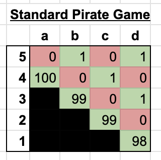
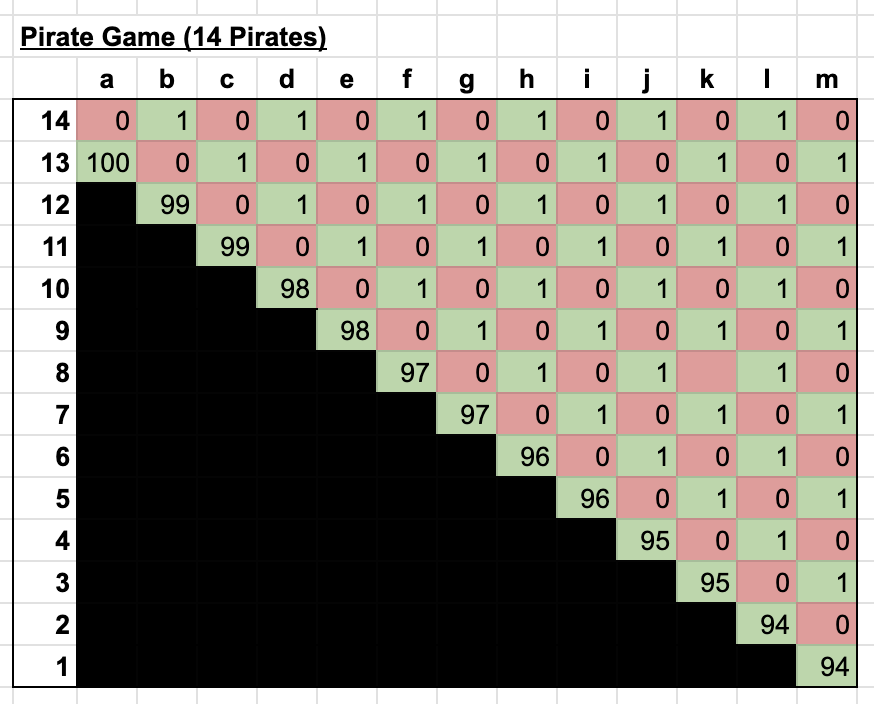
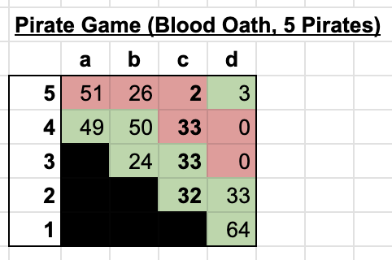
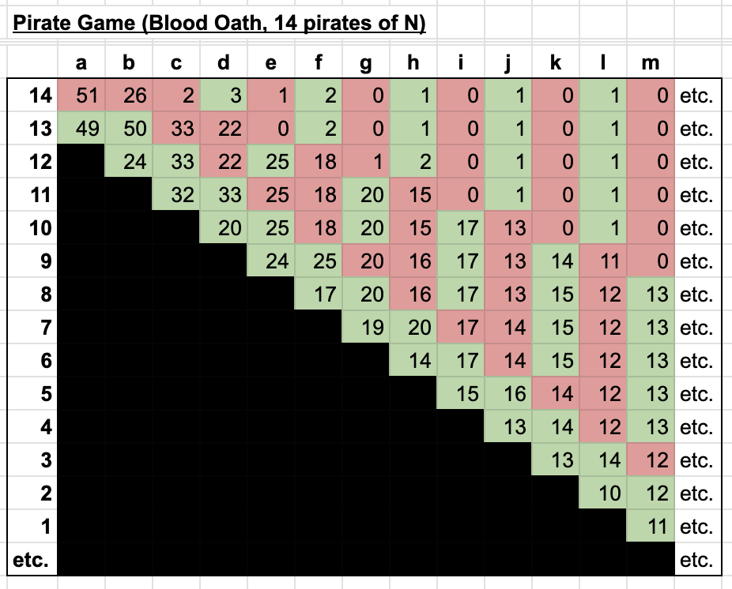
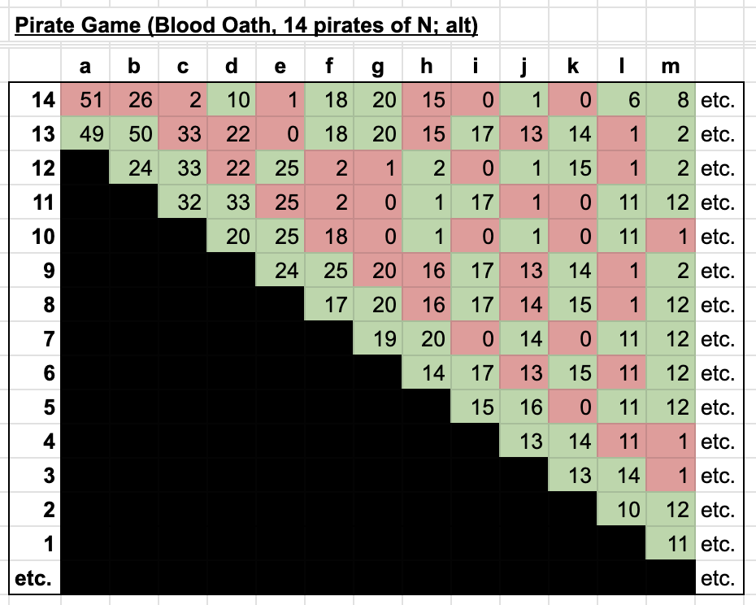
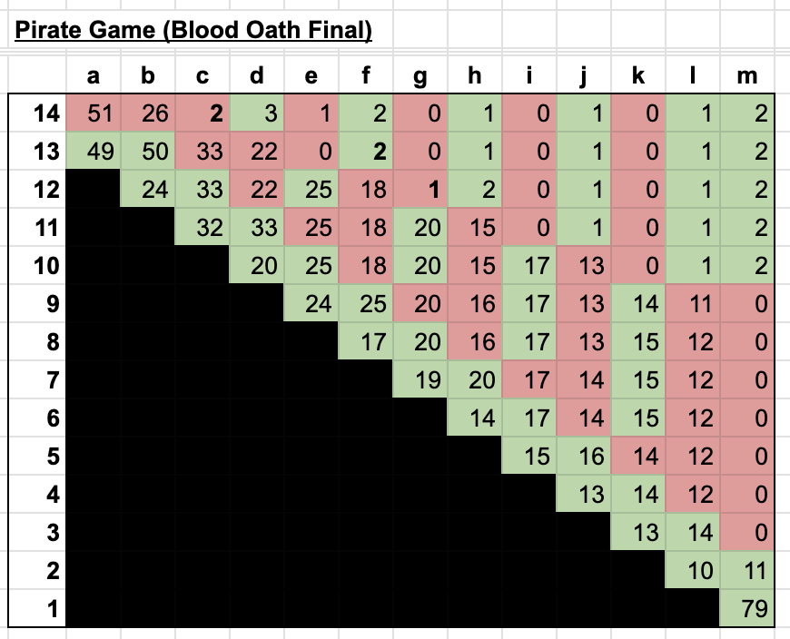

Money Making Opportunity - Week 15 Proposal White Paper
Executive Summary - Utilizing a novel insight regarding the equilibrium of the Pirate Game when played on a blockchain, the following solution is proposed for week 15: The first 729 responding yay votes receive a 0.0435 ETH payment. Additionally, all yay votes will be able to mint this white paper as an NFT. This paper proves that this is the optimal solution given all present constraints.
Motivation
As of this writing, Money Making Opportunity (MMO) is currently in its 15th week, and its contract contains 45.736981 ETH. In the previous 14 weeks there have been numerous proposals, but none have come close to capturing a quorum of the vote. In fact, only three proposals have garnered a single vote:
| Week | Yays | Nays |
| 1473 | 37 | 1437 |
| 1472 | 7 | 1466 |
| 1468 | 2 | 1467 |
While each proposal had compelling properties, they all failed to derive an optimal solution through pursuing a game theory-driven process. At the current rate, MMO may very will resolve itself in 28 years, at which point many participants may no longer be living.
This proposal, while simple, draws on the natural equilibrium of incentives presented by a blockchain-based Pirate Game. The simple fact that a first-come-first-serve equilibrium has been found implies that all participants are incentiviezed to vote yay as fast as possible. All participants who abstain from voting would otherwise be disadvantaged.
Justification
The classic Pirate game has a fairly straightforward equilibrium[1]: the highest ranking pirate (pirate 1) gets 98 coins, while pirates 3 and 5 get one coin each. The following matrix helps illustrate this resolution, where each row corresponds to the payout of a specific pirate and each column corresponds to the proposal round. It's easiest to understand the solution going backwards, so the round with two pirates is round a, the round with three pirates is b, and so forth.
Even though the above solution only accounts for a game with 5 pirates, one could imagine a similar solution for some arbitrary number of pirates. Extending the crew to 14 pirates would yield a similar outcome. Wikipedia would suggest that Pirate 1 would get 94 gold coins, and each odd-numbered pirates would get 1 coin. This proposal would net 7 votes along with the captain's tie breaker.
However, a seemingly small implementation detail in MMO completely changes the incentive structure. Once a proposal is made, a pirate cannot go back on their word. In other words, each proposal is a blood oath.
Thomas Schelling's philosophy of game theory has been summed up by Michael Kinsley with the following thought experiment:
So you're standing at the edge of a cliff, chained by the ankle to someone else. You'll be released, and one of you will get a large prize, as soon as the other gives in. How do you persuade the other guy to give in, when the only method at your disposal -- threatening to push him off the cliff -- would doom you both? Answer: You start dancing, closer and closer to the edge.
In other words, sometimes the most rational strategy is to behave irrationally. So how does this apply to the pirate game? Taking a look at round b in the above matrix, it's clear that the only reason Pirate 14 is offered 1 coin is because of the foregone conclusion that they will be offered 0 coins in round a. But what if, before round b even takes place, Pirate 12 came to a different conclusion about Pirate 11's behavior. What if Pirate 11 took a blood oath to give Pirate 14 the majority of the coins? And how would the concept of a blood oath affect all other pirates' behavior?
The above matrix takes the traditional pirate game and extends it to allow for blood oaths. Like Odysseus, pirates can tie themselves to the mast of their ships, in a sense. By publicly comitting to a certain payout ahead of time, they can affect the behavior of their outranking pirate. In this example, as Pirate 3 is preparing proposal b, the acting captain will try to secure the vote of either 4 or 5 in the cheapest possible manner. Because Pirate 4 has already comitted to receiving 49 gold coins, Pirate 3 knows that they will vote yay with an offer of 50 coins. Meanwhile, Pirate 5 will presumably hold out unless they receive at least 52 coins. But then Pirate 3 will look to pull the same trick on Pirate 2. By comitting to being the cheapest vote in round c, they stay a step ahead of the pack. Pirate 2, of course, has the same idea, and crafts a proposal such that they maximize their own payout for the following two conditions: 1. that their proposal passes, and 2. that they are the second cheapest vote (since proposal a needs two non-captain votes to pass).
One interesting point about this is that there are multiple equilibriums for round c. Pirate 2 could just as easily give Pirate 5 the 33 coin offer and secure an extra vote. Or, they could give Pirates 3 and 4 and extra coin and leave Pirate 5 with nothing. More on this later, but for now let's assume that Pirates will default to giving senior pirates better offers when the alternative doesn't help them.
Let's also assume that when an extra coin needs to be allocated to make the crew's math round out to 100 that it goes to a lower ranking pirate. After all, pirates like making their superior's lives more difficult when given the opportunity.
A standard pirate game would end here, but the payout matrix for the final 14 pirates would look quite different in a game with an arbitrarily large number of pirates.
As the crew gets larger it becomes more difficult to craft a rational proposal. So along with the two rules above (give more senior pirates the better offer when all else is equal, and give any extra coins to lower ranking pirates when it makes the math even), let's give the pirates some guidance. After all, a blood oath is serious business, and you only get to do it once.
Strategy 1 (When there's an odd number of pirates): count the number of votes you need for your proposal to pass. Buy off exactly that many pirates, prioritizing the pirates offered the least amount of gold in the previous round, but don't give them any more than you need to. Then, split the remaining gold among the remaining crew. Make sure that your next-most-senior pirate will buy you off when it's their turn. So for example, if your senior pirate needs 5 votes to pass their proposal, you want to be the fifth cheapest vote for them to buy. Maximize your gold given these constraints.
Strategy 2 (When there's an odd number of pirates): Figure out the number of votes you need, and prepare that many bundles of gold (plus one for yourself and an extra one). Each bundle should be split as equally as possible, but one should have a little less. Allocate the bundles as you see fit, and give yourself the smallest one.
One thing jumps out: even though large parts of the crew are still receiving poor offers, the split of gold is much more equitable.
Returning back to an important point from earlier: whenever there's an even number of pirates things get unpredictable. There are multiple possible equilibriums, and even rational pirates have to fall back on alliances, grudges, and gut feeling to break ties. When the crew no longer pays attention to the sensible defaults we outlined earlier, we see a non-deterministic outcome.
This is another valid equilibrium, and there's much less certainty. The captain gets a modest chunk of the booty, the second in command gets the largest portion, and the third in command is not guaranteed a single coin. But beyond that, all bets are off and anarchy takes hold.
Eventually, though, with a large enough crew you're bound to hit a pirate that has not taken a prior blood oath. So if you're the acting captain with no existing comittments, there's a still a third strategy:
Strategy 3 (When there are no senior pirates): Make whatever offers you need to secure majority vote, without regard to blood oaths.
Application of the Theory
The above analysis implies that it is impossible to predict the behavior of specific participants, but that it is possible to predict aggregate behavior. That is, theory predicts that a majority of rational pirates will vote for an outcome in which they recieve a profit, even if it is impossible to predict which participants will vote for the outcome.
With all of these factors in mind, we can determine that the most effiecient way to allocate "gold" is to utilize the game's natural information asymmetry and allow all participants to determine for themselves whether they are incentivized to vote for the proposal. And as we have already established, the theory suggests that at least a majority of the participants should determine that the incentives are in their favor. This means that we can rely on the following distibution rule:
The first 729 participants to vote yay shall receive a positive payout.
In practice, it is impossible to determine the order of votes, so it is possible that the proposal is settled with a super majority. In this case, the smart contract for this proposal would default to the participants who claim their prize first.
The precise payment, however, requires some thought. Rather than dealing in discrete gold coins, MMO deals in Ether, which is divisible by 1,000,000,000,000,000,000. This means that the actual payment that a majority of participants will accept is not clear.
A reasonable starting point would be the amount contributed (0.03 ETH) plus the amount of gas required to mint a MMO token (0.005). This leaves 20.221981 ETH for distribution between the remaining participants. This now resembles the Ultimatum Game, which suggests that participants are unlikely to accept an offer lower than 30% of the total balance, on average [2]. Splitting 30% of the remaining balance 729 ways, in addition to a 0.035 ETH refund, results in a payment of 0.04332180288 ETH. However, due to the generosity of the proposer, this can be rounded up to 0.0435 ETH.
Each participant who votes yay shall receive 0.0435 ETH, in addition to an NFT of this white paper.
Conclusion
Having derived the optimal solution for Pirate Game with blood oaths, it should be clear at this point that the natural equillibrium is for the MMO contract balance to be split between the proposer and the first 729 respondants.